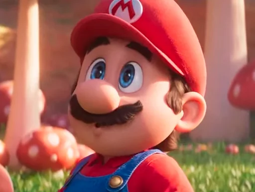
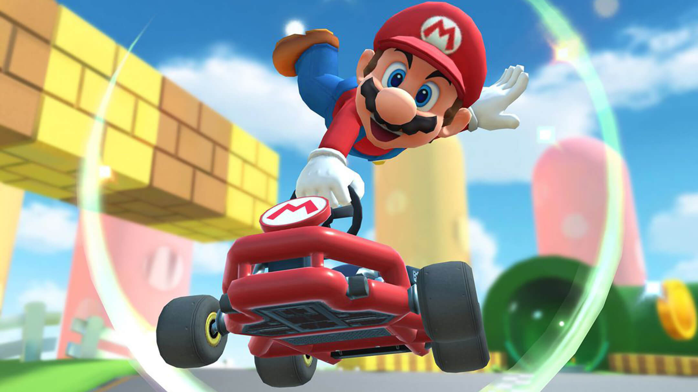
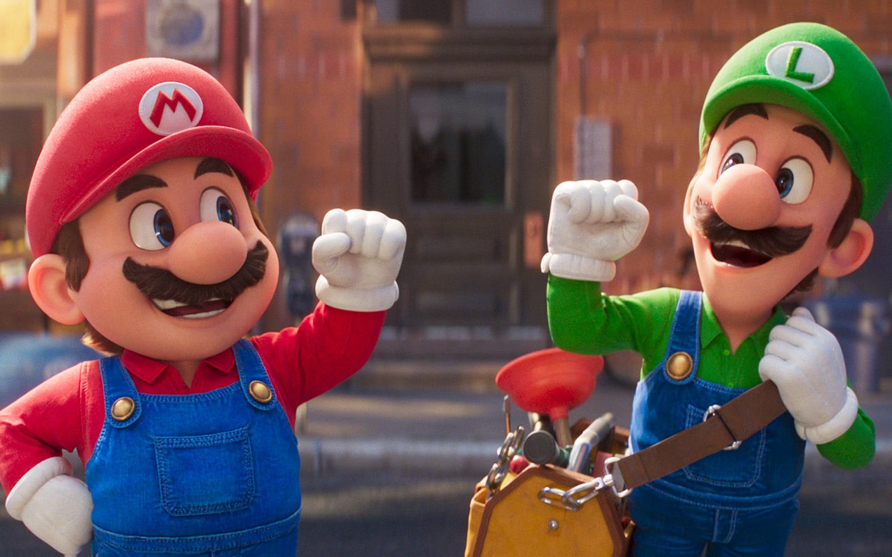
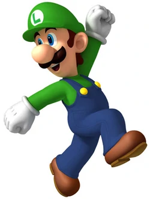

Mario
Originalmente, Mario era carpinteiro, mas, depois dos canos nos quais ele entrava literalmente no famosíssimo jogo Mario Bros, passou a ser considerado encanador. Após o tremendo sucesso no Mario Bros, o personagem foi ainda mais trabalhado.

Mario Cart
O primeiro da série, Super Mario Kart, foi lançado em 1992 para o Super Nintendo Entertainment System e é considerado um dos jogos mais influentes da história, e seguramente a maior referência em termos de spin-off.

Mario e Luigi
Entre eles, Toads, Koopas, Goombas, Shy Guys e vários outros. Seu mordomo, Toadsworth, tem com ela uma relação muito próxima. Peach é grande amiga da Princesa Daisy.

Luigi
Luigi é um personagem fictício do jogo “Mario Bros”, produzido pela Nintendo. Criado pelo designer de games Shigeru Miyamoto, Luigi é irmão de Mario, sendo sua dupla em diversos jogos.
